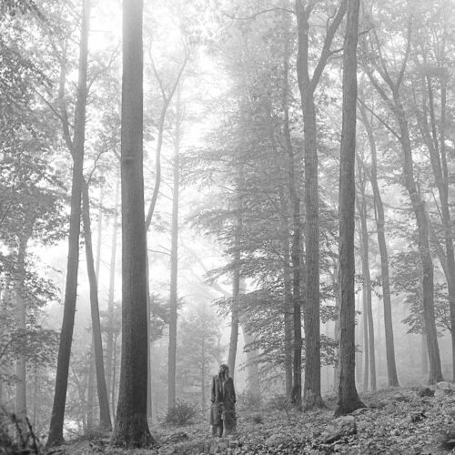

Taylor Swift
2006 • Country
Fearless
2008 • Country Pop

Speak Now
2010 • Pop Rock

Red
2012 • Pop
1989
2014 • Synthpop
Reputation
2017 • Electropop
Lover
2019 • Pop

Folklore
2020 • Indie Folk

Evermore
2020 • Indie Folk

Midnights
2022 • Electropop
Tortured Poets
2024 • Alternative